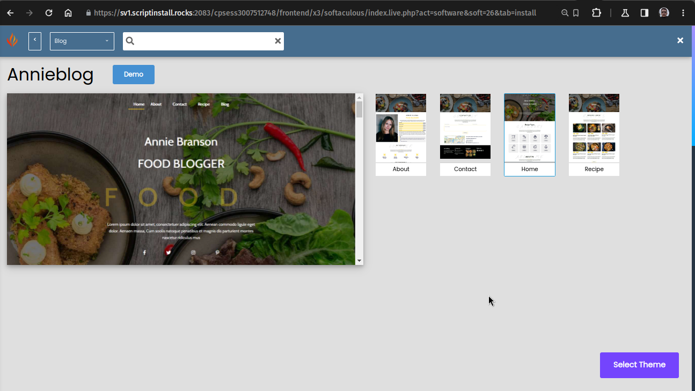

Web-сайт за 30 минут
Введение
В эпоху цифровых технологий веб-сайт является мощным инструментом для коммуникации, представления информации и создания своего уникального виртуального пространства.
Важность веб-сайтов в современном мире
Онлайн-присутствие и видимость:
Сегодня люди все больше времени проводят в интернете. Ваш веб-сайт становится вашей визитной картой в цифровом мире, обеспечивая видимость и доступность вашей информации в любое время.
Личный или бизнес-бренд:
Веб-сайт - это ваш виртуальный бренд. Он помогает вам создать узнаваемый облик, предоставляя платформу для подробного представления ваших идей, продуктов или услуг.
Эффективная коммуникация:
Ваш веб-сайт дает вам возможность взаимодействовать с вашей аудиторией. Это место, где вы можете делиться информацией, новостями, обратной связью, что способствует укреплению отношений с посетителями.
Продажи и маркетинг:
Для бизнеса веб-сайт является мощным инструментом продаж и маркетинга. Он предоставляет возможность привлекать новых клиентов, предлагать продукты или услуги и устанавливать контакты с партнерами.
Почему важно иметь свой веб-сайт
Контроль над информацией:
Владение своим веб-сайтом означает, что у вас полный контроль над представлением вашей информации, без зависимости от сторонних платформ.
Профессиональный облик:
Веб-сайт придает профессионализм и доверие. Посетители могут легко получить информацию о вас или вашем бизнесе, что важно для создания положительного первого впечатления.
Глобальная доступность:
С помощью веб-сайта ваш контент доступен по всему миру. Это открывает новые возможности для расширения своей аудитории и привлечения клиентов из разных уголков планеты.
Аналитика и улучшения:
Многие платформы предоставляют инструменты аналитики, которые позволяют отслеживать посещаемость и поведение посетителей. Это помогает вам лучше понимать свою аудиторию и улучшать ваш веб-сайт.
Шаг 1: Планирование
Определение целей вашего веб-сайта
Личный блог?
Вам нужна платформа для выражения своих мыслей и идей.
Корпоративный сайт?
Вы хотите представить свою компанию и привлечь клиентов.
Интернет-магазин?
Вашей целью может быть продажа товаров или услуг.
Портфолио?
Вы хотите показать свои работы или достижения.
Определение аудитории
Кто ваша целевая аудитория?
Возможно, вам нужно обратить внимание на определенный возрастной диапазон, интересы, профессии и т. д.
Что интересует вашу аудиторию?
Это поможет вам создать контент, который будет привлекательным для ваших посетителей.
Какие проблемы ваш веб-сайт может решить для аудитории?
Это поможет вам формировать контент и функциональность.
Создание концепции и структуры
Выбор дизайна
Решите, каким образом вы хотите, чтобы ваш веб-сайт выглядел. Это может быть минималистичный стиль, яркие цвета, профессиональный вид и т. д.
Определение структуры
Создайте основные разделы и страницы вашего веб-сайта. Размышляйте о том, как организовать информацию, чтобы она была легкодоступной.
Функциональность
Определите, какие функции вам нужны (например, формы обратной связи, галереи, магазин и т. д.).
Шаг 2: Регистрация домена и выбор хостинга
Что такое домен и хостинг?
Домен
Домен - это уникальное имя вашего веб-сайта в интернете. Например, “www.example.com”. Домен служит человеко-читаемым адресом вашего веб-сайта.
Хостинг
Хостинг - это услуга, предоставляемая хостинг-провайдером, которая размещает ваш веб-сайт на сервере и делает его доступным для посетителей в Интернете. Это место, где хранятся файлы вашего веб-сайта, базы данных, и другие ресурсы.
Регистрация домена
Выбор подходящего домена:
Выберите домен, который отражает цели вашего веб-сайта и легко запоминается. Используйте ключевые слова, связанные с вашей темой.
Выбор домена верхнего уровня:
Домен верхнего уровня (например, .com, .net, .org, .by, .ru и т.д.) влияет на восприятие доменного имени.
Регистрация:
Выберите регистратор доменов (сервис, предоставляющий услугу регистрации) и следуйте инструкциям для регистрации выбранного домена. Популярные регистраторы включают GoDaddy, Namecheap, и др.
Выбор хостинг-провайдера
Требования к хостингу:
Решите, какие требования к хостингу у вас есть. Например, для небольших сайтов общего назначения обычно подходит общий хостинг, в то время как более крупные проекты могут требовать выделенного сервера.
Репутация и обзоры:
Исследуйте репутацию и обзоры хостинг-провайдеров. Надежность, скорость загрузки, техническая поддержка - все это важные факторы.
Сравнение тарифов:
Сравните тарифы различных хостинг-провайдеров. Убедитесь, что выбранный вами план соответствует вашим потребностям.
Техническая поддержка:
Уделяйте внимание уровню технической поддержки. Важно иметь возможность быстро решать технические проблемы.
Бесплатный хостинг
Есть несколько бесплатных хостинг-провайдеров, которые предоставляют услуги для создания веб-сайтов. Однако, следует помнить, что бесплатные хостинги обычно имеют ограничения в объеме ресурсов, функциональности и поддержки. В зависимости от ваших потребностей, они могут быть подходящим вариантом для тестирования и начальных проектов. Вот несколько бесплатных хостинг-провайдеров:
- GitHub Pages:
- URL: https://pages.github.com/
- Особенности: Позволяет размещать статические веб-сайты прямо на GitHub. Отлично подходит для проектов с открытым исходным кодом.
- Netlify:
- URL: https://www.netlify.com/
- Особенности: Предоставляет хостинг для статических сайтов, автоматическую сборку из репозиториев Git, CDN и многое другое.
- Heroku:
- URL: https://www.heroku.com/
- Особенности: Позволяет развертывать и хостить динамические веб-приложения. Отличается простым процессом развертывания.
- InfinityFree:
- URL: https://infinityfree.net/
- Особенности: Предоставляет бесплатный хостинг с возможностью использования домена третьего уровня. Однако, есть ограничения по ресурсам.
- 000webhost:
- URL: https://www.000webhost.com/
- Особенности: Предоставляет бесплатный хостинг с поддержкой PHP и MySQL. Ограничения на ресурсы могут быть, но это подходит для небольших проектов.
- AwardSpace:
- URL: https://www.awardspace.com/
- Особенности: Предоставляет бесплатный хостинг с поддержкой PHP, MySQL, и других технологий. Есть ограничения по трафику и ресурсам.
- Битрикс24
- URL: https://www.bitrix24.by/
- Особенности: Бесплатное создание сайтов-визиток с использованием готовых шаблонов и конструктора.
Регистрация и настройка хостинга
Регистрация
После выбора провайдера, зарегистрируйтесь на его сайте и выберите подходящий план хостинга.
Настройка домена
Если вы зарегистрировали домен отдельно, настройте его так, чтобы он указывал на сервер вашего хостинг-провайдера.
Установка CMS (по желанию)
Некоторые провайдеры предоставляют возможность установки CMS (например, WordPress) с помощью одного клика. Это упростит процесс создания вашего веб-сайта.
Шаг 3: Установка CMS (Content Management System)
Обзор популярных CMS
- WordPress:
- Описание: Одна из самых популярных CMS, простая в использовании и обладающая огромным сообществом разработчиков и пользователей.
- Применение: Личные блоги, корпоративные сайты, интернет-магазины.
- Joomla:
- Описание: Более сложная по сравнению с WordPress, но более гибкая. Подходит для более сложных веб-проектов.
- Применение: Корпоративные веб-сайты, порталы, онлайн-журналы.
- Drupal:
- Описание: Мощная CMS с расширенными возможностями настройки. Требует более продвинутых навыков.
- Применение: Крупные корпоративные веб-проекты, социальные сети.
Создание простого сайта на примере InfinityFree
Регистрация
Выбор тарифного плана
Выбор доменного имени
Добавление SSL сертификата
Панель управления аккаунтом

Установщик приложений
Установка WordPress

Выбор темы

Панель управления сайтом
Страницы сайта
Редактор блоков страницы

Заключение
Мы начали с определения целей вашего веб-сайта, прошли через выбор домена и хостинга, а также успешно установили Content Management System (CMS). Эти шаги помогли нам создать основы вашего веб-присутствия.
Подсказки для дальнейшего улучшения и развития:
Добавление контента:
Начните с добавления качественного контента, соответствующего вашим целям и интересам вашей аудитории.
Оптимизация для поисковых систем (SEO):
Используйте ключевые слова, создавайте уникальные мета-теги, чтобы улучшить видимость вашего сайта в поисковых системах.
Регулярное обновление:
Поддерживайте свой веб-сайт актуальным. Регулярно обновляйте контент, добавляйте новости, и следите за обратной связью.
Анализ посещаемости:
Используйте инструменты аналитики для отслеживания посещаемости. Это позволит вам понять, какие страницы популярны, и как можно улучшить пользовательский опыт.
Мобильная оптимизация:
Убедитесь, что ваш веб-сайт отображается корректно на мобильных устройствах. Мобильная оптимизация становится все более важной.
Безопасность:
Соблюдайте базовые меры безопасности, такие как регулярное обновление CMS и плагинов, использование надежных паролей, и резервное копирование данных.
Социальные сети:
Интегрируйте свой веб-сайт с социальными сетями. Это поможет вам расширить свою аудиторию и лучше взаимодействовать с посетителями.
Обратная связь:
Активно собирайте обратную связь от посетителей. Это может быть ключевым инструментом для улучшения вашего веб-сайта.
Надеюсь, что эта лекция вдохновила вас создать ваш веб-сайт и помогла разобраться с основами. Помните, что веб-сайт - это постоянно развивающийся процесс, и ваш творческий подход может сделать его уникальным и успешным. Удачи в создании вашего веб-пространства!